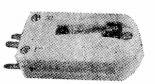
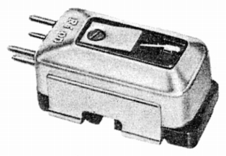
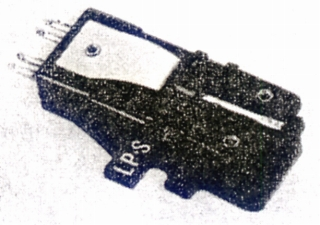
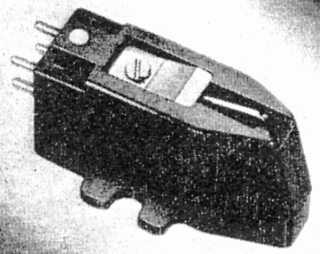
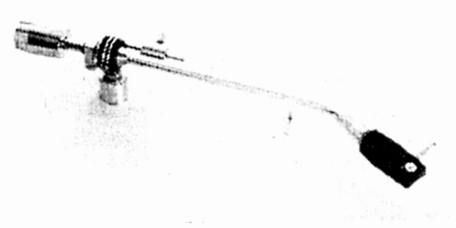

RION（リオン）
1944年創立のリオンの製品。同社はわが国最初の音響機器用クリスタルエレメントおよびその応用製品の製造を目的とした会社であり、1970年頃には本体サイトで紹介したヘッドフォンのほか、アナログディスク関連製品もまだ扱っていた。

（クリスタル型カートリッジ CS-1 周波数レンジは30-12,000Hz 針圧 7g 1960年頃の製品）
（クリスタル型カートリッジ CS-7A 周波数レンジは30-18,000Hz 1966年頃の製品）管理人手持ちの資料で確認できるのはカートリッジ2点と、アーム1点。カートリッジは電磁型ではなく、ジルナマ型、すなわち圧電型である。
�T.カートリッジ
TN-01

■価格 2,400
■発電方式 ジルナマ型
■出力電圧 250mV
■針圧 4〜5g
■再生周波数帯域 40-15,000Hz
■チャンネルセパレーション 30dB
■チャンネルバランス
■コンプライアンス 4×10-6cm/dyne
■負荷抵抗
■直流抵抗
■インピーダンス
■針先 0.7mil
■自重
■交換針 NPOID(\2,000)
■発売
1967年1月
■販売終了 1971〜72年頃
■備考 価格は1970年頃のもの
SP用とLP用の両方の針を持つ
ニードルターンオーバー型の
カートリッジ。
TS-07

■価格 2,950円
■発電方式 ジルナマ型
■出力電圧 200mV
■針圧 3〜4g
■再生周波数帯域 40-18,000Hz
■チャンネルセパレーション 30dB
■チャンネルバランス
■コンプライアンス 7.5×10-6cm/dyne
■負荷抵抗
■直流抵抗
■インピーダンス
■針先 0.7mil
■自重
■交換針 NPO7D(\2,100)
■発売
1967年1月
■販売終了 1971〜72年頃
■備考 価格は1970年頃のもの
�U.アーム
TA-6

■価格 3,300円
■型式 スタティックバランス型
■全長 314�o
■実行長
■オーバー・ハング 13�o
■針圧範囲 1〜5g
■アーム高さ
■アームベース穴
■アンチスケートディバイス
■アームリフター
■ラテラルバランサー あり
■カートリッジ自重
■線間容量
■発売 〜1970年
■販売終了 1971〜72年
■備考 価格は1970年頃のもの